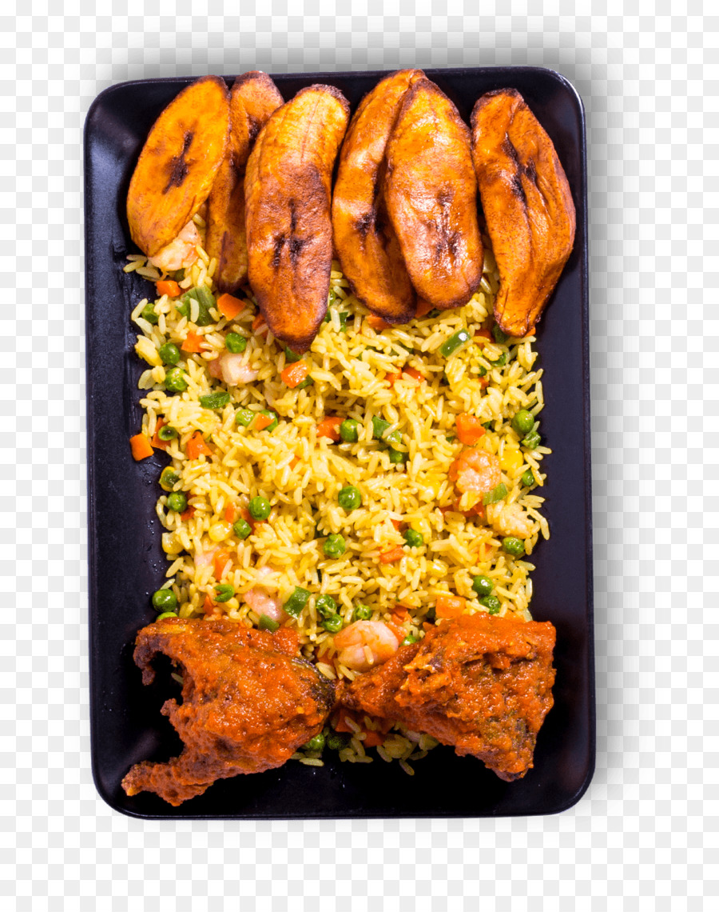

Go to Home Page
Look at my Resume
Find out about my Heritage
This page is just a little more about me
My ethnicity is Yoruba. They are a group of people (several hundreds of tribes) scattered mainly around the southern parts of Nigeria, a republic in West Africa. They have a very rich culture and traditions. They wear bright colorful clothes with beautfiul patters in various styles.
Food
There are so many vegetables and fruits used to make Nigerian foods including peppers, rice, yams, tomatoes, and coconuts. Some of the most common spices and seasoning include cayenne pepper, suya seasoning, thyme, curry, and rosemary. These are some of the staple foods
Jollof rice (smokey, rich flavor)
Dodo (crispy, fried and sometimes seasoned plantains)
Stew
Efo-riro and stew with pounded yam
Yam and egg stew
Anything with stew
Here are som copyright free photos of Jollof- Rice:)
